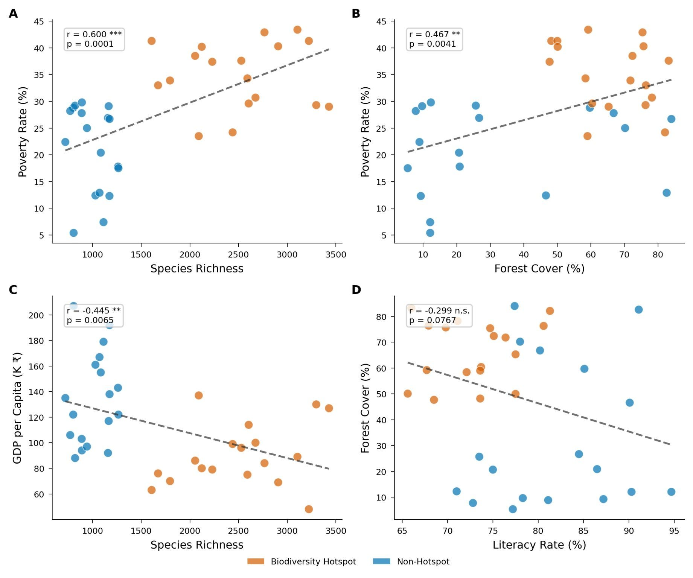
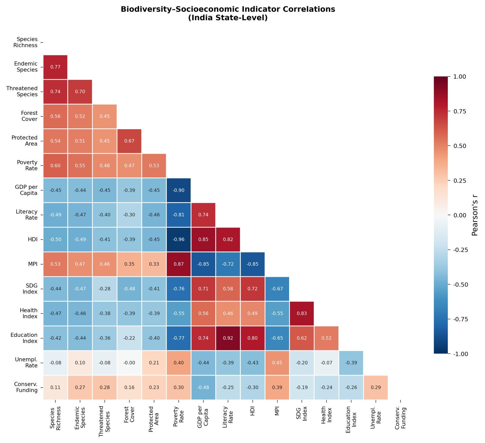
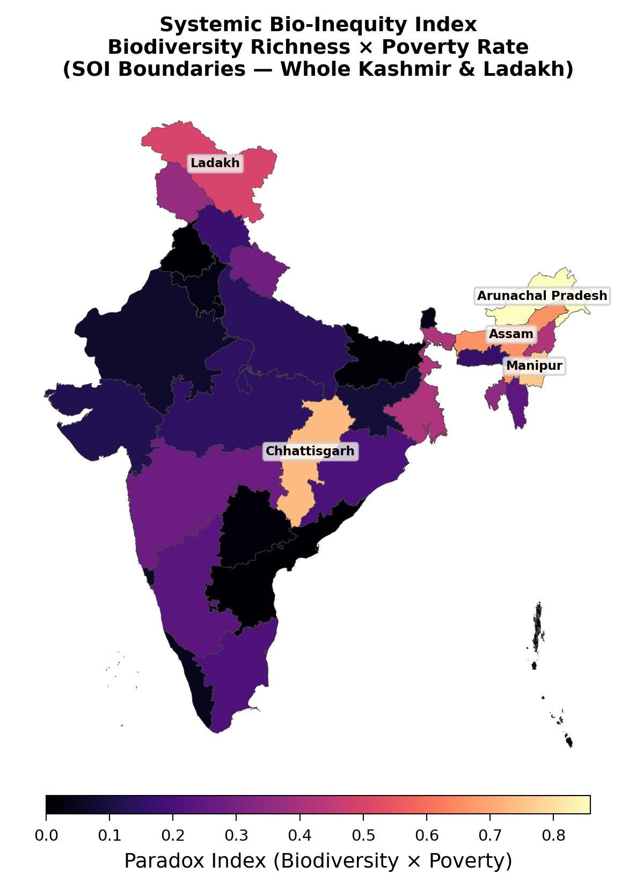
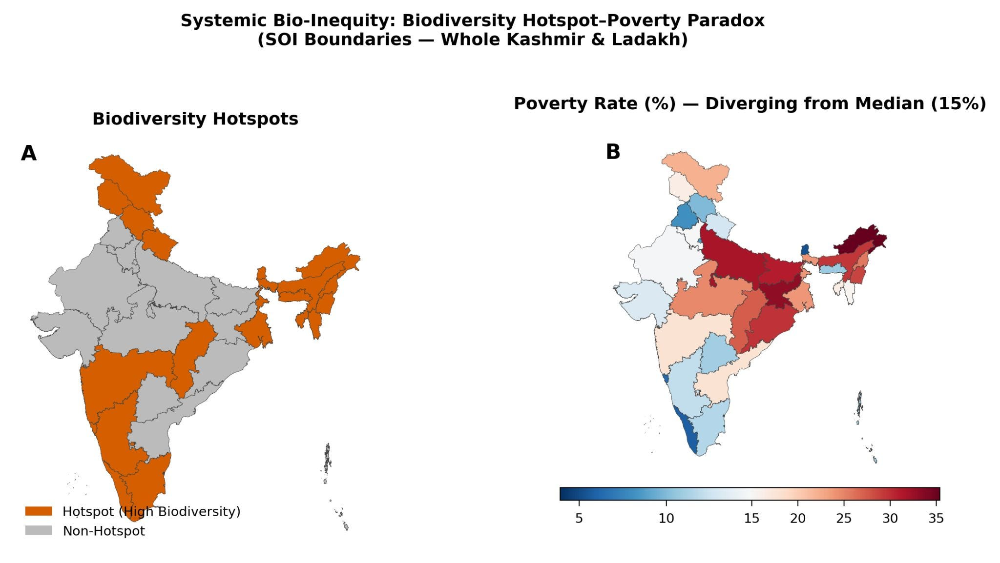
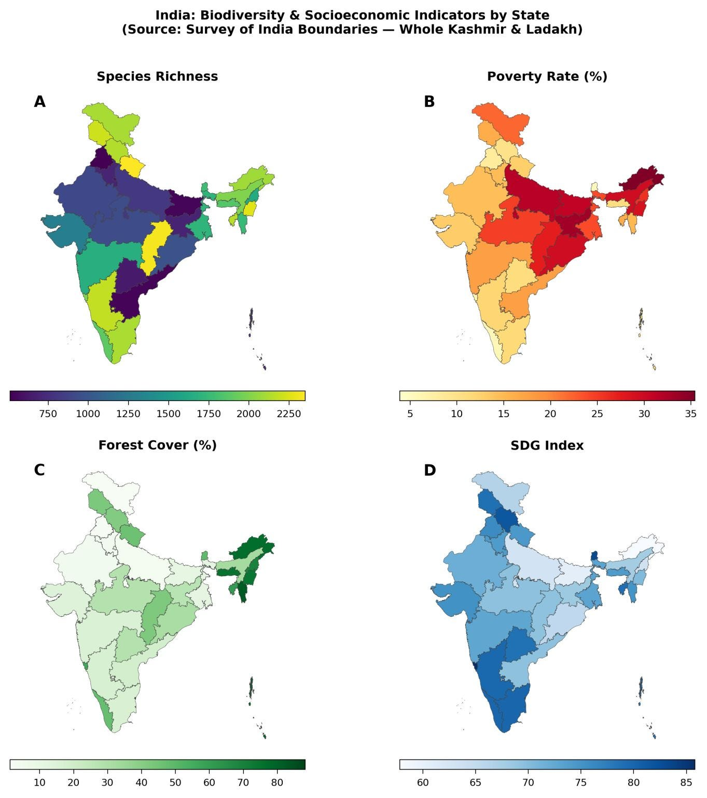

Independent research note · India-focused inquiry
Systemic Bio-Inequity in India: Exploring the Biodiversity–Poverty Paradox
India's richest biodiversity landscapes raise a difficult question: why can ecological wealth exist alongside poverty and lower living standards for the people who live in and around these regions?
I became interested in this question while exploring systemic bio-inequity and the conservation paradox. My focus is on the relationship between biodiversity, poverty and the distribution of benefits from nature—and what this means for conservation and environmental policy in India.
Protecting an ecosystem is not the same as ensuring that the people living with it benefit fairly from its value. I want to understand this gap more closely, and what it means for the way conservation is financed, governed and experienced locally.
The question
Where nature is richest, are people poorest?
The paradox is simple to state and hard to answer: Indian states with the greatest ecological wealth — species richness, forest cover, biodiversity hotspots — also tend to record higher poverty and lower living standards. This inquiry asks whether that pattern holds across states, what drives it, and who benefits from the value these landscapes hold.
Why it matters
Conservation and livelihoods, together
Biodiversity conservation, local livelihoods, public investment, governance and the distribution of benefits need to be considered together. If protected areas and conservation funding flow to ecologically rich regions while the people there remain poor, then conservation policy has a distribution problem — not just an ecological one. Understanding that gap matters for how conservation is financed, governed and experienced locally.
The inquiry
An India-focused, state-level comparison
This inquiry compares Indian states across biodiversity and socioeconomic indicators: species richness, endemic and threatened species, forest cover, protected area, poverty rate, GDP per capita, literacy rate, HDI, MPI, SDG, health and education indices, unemployment, and conservation funding — alongside a biodiversity-hotspot classification and a composite bio-inequity (paradox) index combining biodiversity richness with poverty rate.
Full documentation of datasets, periods and methods is being compiled and will be added here.
Visual evidence
Figures from the inquiry

Each point is an Indian state or territory, coloured by biodiversity-hotspot status. As annotated on the figure: species richness vs poverty rate, r = 0.600*** (p = 0.0001); forest cover vs poverty rate, r = 0.467** (p = 0.0041); species richness vs GDP per capita, r = −0.445** (p = 0.0065); literacy rate vs forest cover, r = −0.299, not significant (p = 0.0767). Correlations describe association, not causation.

India state-level Pearson correlations. As annotated: poverty rate correlates with species richness (0.60), GDP per capita (−0.90) and HDI (−0.96); conservation funding correlates with species richness (0.11), poverty rate (0.30) and GDP per capita (−0.48).

Composite of biodiversity richness and poverty rate on a 0.0–0.8 paradox-index scale, mapped with Survey of India state boundaries.

Biodiversity-hotspot states alongside poverty rates diverging from a 15% median (scale 5–35%), on Survey of India boundaries.

Species richness, poverty rate (%), forest cover (%) and SDG Index by state, each with its own scale as shown.
Research reference
Conceptual reference
The main conceptual reference for this inquiry is a global study of biodiversity–poverty relationships and the potential influence of historical exploitation and unequal distribution of benefits:
Waldock, C., Nguyen, V. T. H., Awuor Owuor, M., Samwel Manyanza, A., & Seehausen, O. (2026). “Systemic bio-inequity links poverty to biodiversity and induces a conservation paradox.” People and Nature, 8, 2700–2719. First published online 16 June 2026. https://doi.org/10.1002/pan3.70349 ↗
That paper investigates global biodiversity–poverty relationships; it did not conduct an India-specific state-level analysis. The figures above come from my own separate India-focused inquiry.
Interpretation
What this shows — and what it doesn't
The global bio-inequity framework and the India-specific evidence presented here operate at different levels: the former offers concepts, while only the latter speaks — provisionally — to Indian states. Correlations between biodiversity and poverty describe association, not causation, and say nothing by themselves about historical exploitation or policy failure.
Full documentation of the datasets, reference periods and statistical methods behind these figures is still being compiled and will be added here. Until then, treat the patterns as the inquiry's working evidence, not as settled findings — and the India question above as exactly that: a question under investigation.
Thoughts on biodiversity and justice?
Corrections, datasets and collaborations welcome.